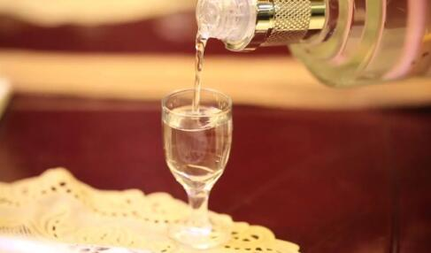

煎
煎通常是指用锅子把少量的油加热，再把食物放进去，使其熟透的一种烹调方法。煎是加少量油用中小火加热，煎表面会稍成金黄色乃至微煳。
炒
炒主要是以油为主要导热体，将小型原料用中旺火在较短时间内加热成熟、调味成菜的一种烹调方法。炒一般都是旺火速成。
烹
烹通常是指在煎或炸的基础上，烹上清汁入味成菜的一种烹调技法。烹，可分为两种具体方法，一是“炸烹”，二是“煎烹”。
炸
炸是指是用旺火加热，以食油为传热介质的烹调方法。炸的特点是旺火、用油量多，菜肴的特点是香、酥、脆、嫩。
酒文化
酒文化是指酒在生产、销售、消费过程中所产生的物质文化和精神文化总称。酒文化包括酒的制法、品法、作用、历史等酒文化现象。既有酒自身的物质特征，也有品酒所形成的精神内涵，是制酒饮酒活动过程中形成的特定文化形态。

中国酒文化
酒文化在中国源远流长，不少文人学士写下了品评鉴赏美酒佳酿的著述，留下了斗酒、写诗、作画、养生、宴会、饯行等酒神佳话。酒作为一种特殊的文化载体，在人类交往中占有独特的地位。酒文化已经渗透到人类社会生活中的各个领域，对人文生活、文学艺术、医疗卫生、工农业生产、政治经济各方面都有着巨大影响和作用。

中国是酒的故乡，酒和酒类文化一直占据着重要地位。酒是一种特殊的食品，是属于物质的，但酒又融于人们生活之中不可缺少的东西。作为一种特殊的文化形式，在传统的中国文化中有其独特的地位，其中也衍生出了酒政制度。在几千年的文明历史中，酒几乎渗透到社会生活中的各个领域。中国是一个以农业为主的国家，因此一切政治、经济活动都以农业发展为立足点。而中国的酒，绝大多数是以粮食酿造的，酒紧紧依附于农业，成为农业经济的一部分。粮食生产的丰歉是酒业兴衰的晴雨表，各朝代统治者根据粮食的收成情况，通过发布酒禁或开禁，来调节酒的生产，从而确保民食。